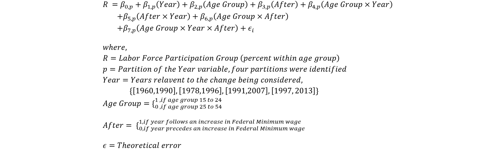
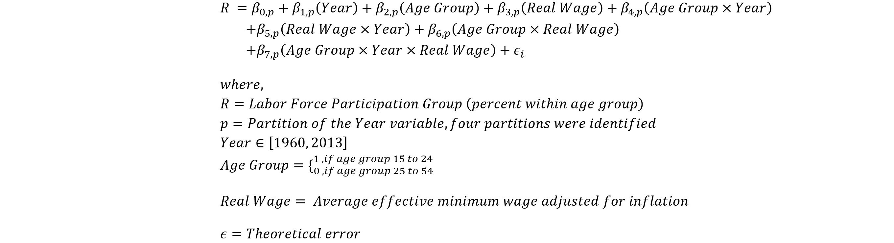
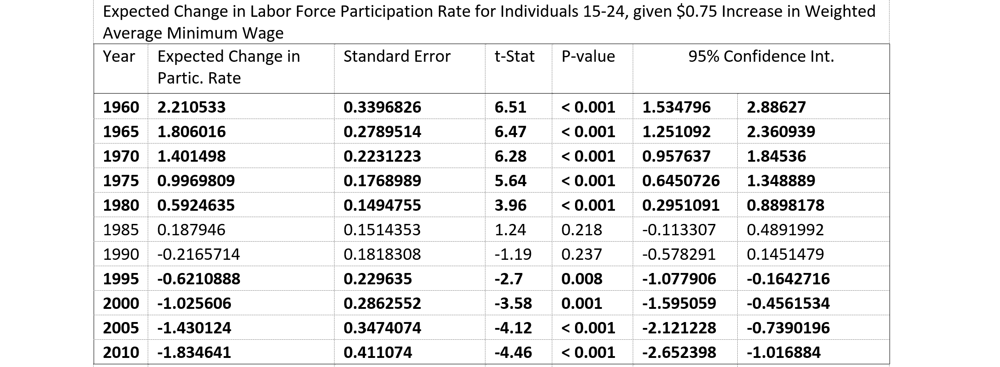

Also See:
Senior Paper: The Effect of Minimum Wage on Labor Force Participation among Young Individuals
(Posted May 30, 2020)
My coauthors and I completed this paper over the Fall 2016 semester for our ECON 417: Seminar in Econometrics course at Sonoma State University. We were given the prompt that the paper must use the estimators and models discussed in class, and that it must cover some aspect of minimum wage. Our inspirations for this paper came from two places: first, articles discussing generational differences ("Millennials are killing the ... industry") which were becoming popular at the time, and second, by the work of one of our professors at SSU.
Original: The Effect of Minimum Wage on Labor Force Participation among Young Individuals
Summary:
In their paper analyzing the effect of the movie, Sideways, on the demand for Merlot, Steven Cuellar et al built a model for comparing the change in the trend in sales after the release of the movie compared to a similar varietal that acted as a control group. Specifically, they were able to compare whether the trend in Merlot sales decreased relative to the market following the release of the movie. If the change in the trend of Merlot sales was significantly less than the change in the competitor over the same time period, then there is empirical evidence of what the industry had been calling "The Sideways effect." What Cuellar discovered was that the decline in sales began long before the movie; therefore, there was no evidence for the Sideways effect.

We sought to employ the same theoretical model to analyze how young people reacted to increases in the federal minimum wage over time. We wanted to see if there was a significant difference in the responses to wage increases over time, and if so young people from which time period responded the strongest and weakest. To that end, we collected yearly labor force participation rate data for people 15 to 24, and people 25 to 54 as well as generated groups based on each increase of the federal minimum wage. With that data and in keeping with the theoretical model, we composed a linear model that was the complete factorial design of Year, an Age Group indicator and an After-Increase indicator.
Our analysis of these effects came from comparing the β7 coefficients, since for each model it represents the change in the participation rate attributable to just the behavior of young people. To complete the analysis, we would conduct a multiple-comparison of each β7 coefficient to determine what difference, if any, there was. We expected to see a significant positive effect in the first increase which decreased over each following increase until wage increases had an insignificant effect--this was informed by our suspicion that the federal minimum wage had become a non-binding price floor for many people.
In recognition that the degree by which the federal minimum wage increased was inconsistent, and that many states set their own minimum wage above the federal, we specified a second model adapted from the first. In this second model, we replaced the before-and-after binary with a new instrumental variable, the average effective minimum wage. We calculated this instrument as the inflation-adjusted average minimum wage across each state. We tested both unweighted and weighted by state population versions of this instrument. To complete our analysis of this model, we would compute an expected increase in participation given a fixed increase in wage over a period of time. We expected our results to reinforce the results of our first model.
The results of our first set of models showed a range of positive and negative, significant and non-significant changes in the trend in labor force participation. From these results we might say that the 1977 increase, the first in the data, led tho the strongest decrease in the labor force participation of young people and the 1989 increase led to the strongest increase; however, the presence of unaccounted for confounding variables and low numbers of observations make such assessments dubious.

Our second set of models provided a much more compelling set of results. Given a fixed increase in average effective minimum wage (chosen to be within one standard deviation of the average annual change), we are able to analyze the expected change over time. As we can see in the tables, as the model gets closer to present-day, the expected change goes from positive and significant to insignificant, and then to negative and significant. This would imply a negative relationship between labor force participation and wages for young people in recent years.
On their own, these results would be in conflict with the most basic principles of Supply and Demand. Binding and nonbinding price floors provide an understanding for positive and significant, and insignificant results; however, they provide no framework for interpreting negative and significant results. An investigation of opportunity costs provides one possible explanation. In her article for NPR ( "The Life and Death of the Summer Job" ), journalist Anya Kamenetz examines how higher admission standards for colleges have translated to a higher opportunity cost for young people. It would appear that our model is possibly capturing the effect of young adults focussing on course work and extracurriculars to the exclusion of low-paying, part-time work.
Remarks:
Despite its imperfections, I am very proud of this paper. My coauthors and I spent several hours every week debating models, reviewing papers and transforming data in Excel by hand--trying to meet the end of the semester deadline. The following semester, we presented the paper at the Sonoma State Research Symposium (2017), the Northern California Undergraduate Mathematical Conference (2017), and that summer we presented it at the Western Economics Association International conference in San Diego (2017).
In hindsight, there are a number of things I would do differently. I would have used monthly instead of yearly data. I think more investigation of the correlations between some of the independent variables was warranted. I think we should have done a better job addressing the fact that many of the people in the 25 to 54 age group also worked at or near minimum wage. This violates the assumption in our models that the comparison group is unaffected by the change we are trying to analyze. To begin to address this, I would instead compare the 15 to 24 group against the aggregated labor market participation rate. The models would then be acting to measure the degree by which the trends in the younger group deviate from the average market-wide trends (similar to the use of S&P 500 in the CAPM from Finance). Finally, I think further analysis of this topic should also take into account the opportunity cost of education. How such a cost would be quantified for analysis, I am unsure.